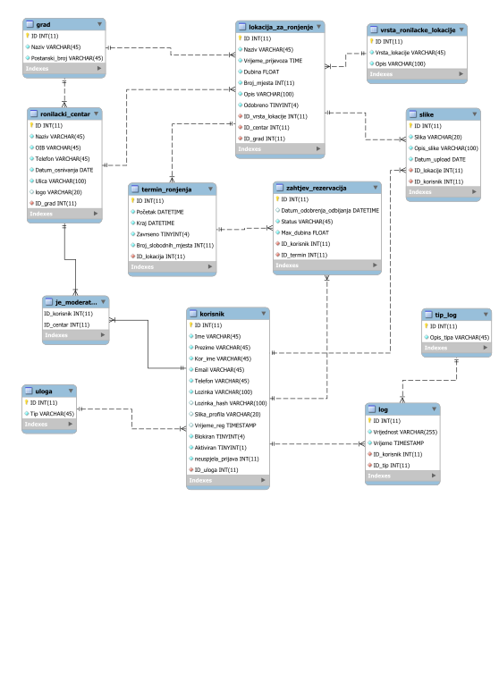

Opis projektnog zadatka
Kratak opis projekta:
Sustav omogućuje upravljanje ronilačkim centrima, rezervacijama termina za ronjenje i sl.
Uloge
- Neregistrirani korisnik
- Registrirani korisnik / Ronioc
- Moderator / Voditelj ronilačkog centra
- Administrator
Detaljne upute
Administrator
- Kreira ronilački centar i dodjeljuje moderatore za ronilački centar.
- Kreira vrste ronilačkih lokacija (u centru, zidovi, olupine, …
- Odobrava ili odbija lokacije koje je kreirao moderator.
- Pregledava statistike zahtjeva za rezervacijom termina (odobrenih/odbijenih) u nekom razdoblju po ronilačkim centrima uz mogućnost da se odabere centar i onda se dobiju podaci po lokacijama tog centra.
Moderator
- Kreira lokacije za ronjenje u ronilačkom centru pri čemu obavezno odabire vrstu ronilačkih lokacija te definira naziv, vrijeme prijevoza do lokacije, dubinu, broj mjesta po terminu i opis. Automatski se šalje zahtjev administratoru da odobri lokaciju.
- Kreira termine ronjenja za neku lokaciju nakon što administrator odobri lokaciju. Termine ronjenja može postaviti u stanje završeno kada prođe termin.
- Pregledava i odobrava zahtjeve korisnika za rezervacijom mjesta. Odobren/odbijen zahtjev za rezervacijom termina ima datum i vrijeme odobravanja/odbijanja. Posebno su označeni oni kod kojih je naznačena dubina u zahtjevu manja od dubine lokacije. Ne može odobriti više zahtjeva nego ima slobodnih mjesta po terminu.
Registrirani
- Kreira zahtjeve za rezervacijom termina za ronjenje. Ako nema mjesta odmah je status na čekanju. Kod kreiranja zahtjeva mora navesti do koje dubine u metrima smije roniti.
- Pregledava zahtjeve sa statusom termina ronjenja (odobreni, odbijeni, završeni). Može odustati prije termina ronjenja, pri čemu se oslobađa mjesto za nekog drugog korisnika.
- Postavlja sliku s lokacije na kojima je ronio, može birati samo lokacije gdje ima termin koji je završio
Neregistrirani
- Može pretraživati lokacije za ronjenje uz mogućnost filtriranja po ronilačkom centru i vrsti lokacije. Svaki element ima dvije poveznice na ronilački centar i lokaciju.
- Vidi informacije o lokaciji sa slikama te lokacije.
- Vidi informacije o ronilačkom centru.
Opis projektnog rješenja
Rješenje obuhvaća funkcionalan rad sustava.
Rješenje nije u potpunosti ispravno.
Nedostaje implementacija nekoliko funkcionalnosti
Odrednice projektnog rješenja
ERA Model
Skripte
Navigacijski dijagram

Mapa mjesta
Last updated: 2019, June 4
Total pages: 10
barka.foi.hr Homepage
- / 4 pages
- Index
- Index
- O autoru
- O autoru
- form/ 3 pages
- Prijava
- Registracija
- Zaboravljena lozinka
- pages/ 3 pages
- Pretraga
- Ronilački centar
- Ronilačka lokacija
Popis skripata
- Admin
- odbijLokaciju.php
- prihvatiLokaciju.php
- Panel
- banUnban.php
- dohvatiKorisnike.php
- dohvatiLogove.php
- saveCSV.php
- Moderator
- odbijZahtjevKorisnika.php
- prihvatiZahtjevKorisnika.php
- Delete
- obrisiZahtjev.php
- Fetch
- centarPaginate.php
- dohvatiCentar.php
- dohvatiGradove.php
- dohvatiLokacije.php
- dohvatiLokacijeZaCombo.php
- dohvatiTermine.php
- dohvatiUsername.php
- dohvatiVrste.php
- dohvatiZahtjeveKorisnika.php
- dohvatiZahtjeveZaAdmina.php
- dohvatiZahtjeveZaModeratora.php
- lokacijePaginate.php
- Form
- adminP.php
- odjava.php
- prijava.php
- profil.php
- registracija.php
- zaborav.php
- Other
- aktivacija.php
- dodjelaModa.php
- kreirajCentar.php
- kreirajLokaciju.php
- kreirajRezervaciju.php
- kreirajTermin.php
- KReirajVrstu.php
- postaviTerminNaZavrseno.php
- uploadSlike.php
- Pages
- centar.php
- lokacija.php
- pretraga.php
- Private
- users.php
- index.php
- podnozje.php
- zaglavlje.php
Tehnologije
Smarty
jQuery
Google API
jQuery CSV
Vanjske biblioteke
jQuery CSV
https://cdnjs.cloudflare.com/ajax/libs/jquery-csv/0.71/jquery.csv-0.71.min.js
Korišteno za lakši rad (čitanje) CSV datoteke
Smarty
U potpunosti iskorišten Smarty sustav za predloške
Baza.class.php
Korištena klasa Baza za lakši rad s bazom
Sesija.class.php
Korištena klasa Sesija za lakši rad sa sesijom